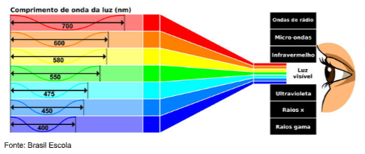
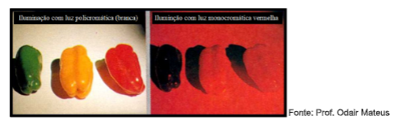
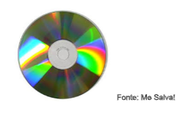
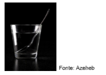
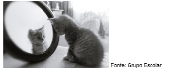
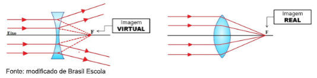
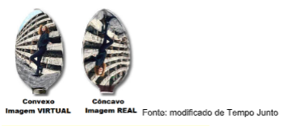
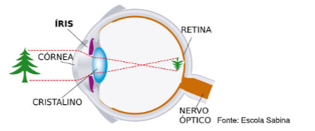
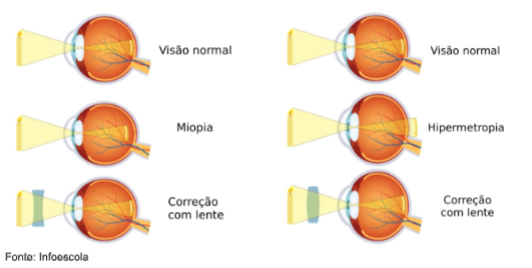
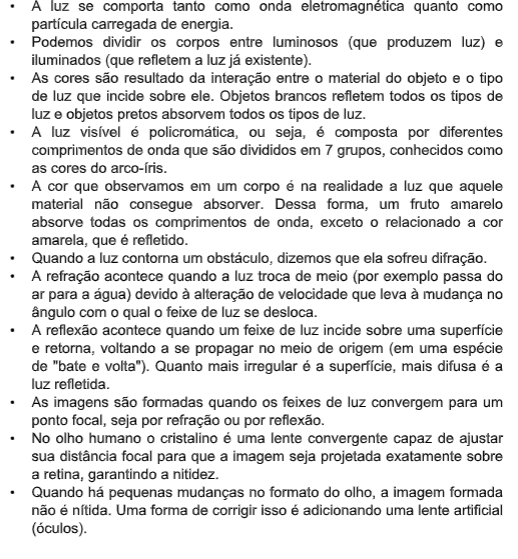

Capítulo 3
O setor calçadista e as cores
Que fenômenos estão associados às cores dos calçados? Como podemos começar a relacionar estes fenômenos à física?
ContextualizandoDesde o planejamento até a concepção das coleções de calçados desenvolvidas por este setor, muito estudo é necessário. Não apenas em relação ao material adequado e processo de produção, mas também em relação à estética. Como as cores serão combinadas? Como atingir o tom perfeito em cada tipo de matéria- prima? Como o reflexo destes materiais acontece em diferentes ambientes? Isso altera a percepção de cores?
São questionamentos importantes que, muitas vezes, são respondidos pela física sem que a gente perceba. Também o mundo da moda é influenciado pelos fenômenos que regem a natureza.
O setor calçadista se preocupa em transformar os seus produtos em uma forma de comunicação, a escolha do estilo de sapato revela, inclusive, alguns elementos de nossa personalidade. É um tipo de comunicação visual e, de um modo geral, se comunicar visualmente envolve processos de reflexão e emissão de luz. Por exemplo, a televisão emite, bem simplificadamente um conjunto de luzes que forma imagens, as cores dos calçados e outdoors podem ser percebidas pela reflexão da luz proveniente do Sol que é uma combinação de muitas cores. Ou seja, conhecer os materiais e como a luz se comporta é essencial para garantir que um calçado aja como uma forma de comunição. Parece muito estranho? Vamos desenvolver um pouco mais essa ideia.
(Re)construindo conhecimentosÓptica é o ramo da física que estuda os fenômenos ligados à luz. Como são formadas as cores, como a luz se comporta ao interagir com diferentes tipos de corpos, etc. são discutidos por ela.
Para que possamos enxergar é necessário que o objeto em questão seja capaz de emitir ou refletir luz, sem ela nossos olhos não são capazes de captar informações.
A luz possui um comportamento duplo. Ela se comporta tanto como uma onda eletromagnética quanto como um fluxo de partículas. Isso significa que o comportamento dela vai variar de acordo com o fenômeno em questão. Enquanto partícula, é comum dizer que a luz é composta por muitos "pacotes" de energia (fótons). Enquanto onda, ela se apresenta em diferentes comprimentos, podendo ser absorvida ou refletida pela superfície de objetos.
A cor que observamos é justamente o comprimento de onda que não é absorvido por um objeto iluminado e, por tanto, é refletido. São as características físico-químicas do corpo que determinam qual comprimento de onde será absorvido e qual será refletido.
A luz visível emitida pelo Sol é policromática, ou seja, contém uma mistura dos comprimentos de onda, por isso pode ser decomposta em sete cores básicas, conhecidas como as cores do arco-íris
 Você sabia?As folhas de plantas são verdes, pois a clorofila (que atua na fotossíntese) é capaz de absorver todos os comprimentos de onda da luz solar, exceto o verde, que, então, é refletido.
Se iluminarmos uma planta com uma luz monocromática vermelha (ou seja, que possui apenas o comprimento de onda relacionado ao vermelho) suas folhas absorverão toda a luz e nós a veremos como algo preto. A mesma coisa acontece com qualquer corpo quando é iluminado por uma luz monocromática diferente da cor que reflete.
Um corpo é chamado de luminoso quando é capaz de emitir luz. Vários processos químicos e térmicos podem estar envolvidos na emissão de luz, um exemplo clássico de corpos luminosos são as estrelas.
Corpos que não são capazes de emitir luz e apenas refletem aquela já existente são chamados de iluminados e são a maioria. Como exemplo podemos citar móveis, a Lua, pessoas, etc.
Existem diversos fenômenos associados à característica ondulatória da luz e que descrevem como ela interage com as superfícies para formar o visual da natureza a que estamos habituados.
A difração é o fenômeno de desvio ou espalhamento das ondas quando estas contornam um obstáculo. É o que acontece, por exemplo quando a luz branca incide sobre um CD.
A refração da luz é a mudança de velocidade que acontece quando o feixe de luz atravessa um meio diferente. Essa mudança de velocidade pode provocar um deslocamento do feixe de luz. Como consequência, a imagem formada fica distorcida e temos a impressão, por exemplo, de que a colher dentro de um copo de água está torta.
A reflexão da luz acontece quando a luz atinge uma superfície e é desviada em direção ao seu meio de origem. É o que acontece, por exemplo, em um espelho.
Até agora, vimos que a presença de luz é o que define se seremos capazes de enxergar ou não. Nossos olhos são sensores de luz. Também vimos que a cor das superfícies é resultado da interação entre o tipo de material que compõem o corpo e o tipo de luz que incide sobre ele. Nosso próximo passo é perguntar: como uma imagem é formada? O que define se ela será nítida ou não?
Uma imagem se forma quando feixes de luz ou seus prolongamentos convergem para um ponto. Essa convergência acontece quando o feixe é refratado em uma lente ou refletido em uma superfície especular.
Para entender mais
As imagens são diferenciadas entre imagens reais e virtuais. A diferença entre elas reside na forma em que são geradas.
Uma imagem real é formada quando os feixes de luz convergem para um ponto (a imagem) depois de terem sido refratados por uma lente ou refletidos por um espelho. Como os raios de luz se cruzam nesse processo toda a imagem real é invertida. Você pode criar uma imagem real ao se observar no lado côncavo (interior) de uma colher.
Uma imagem virtual é formada quando apenas os prolongamentos dos feixes de luz convergem, já que, nesse caso, depois de refratar em uma lente ou refletir em um espelho os feixes de luz sofrem espalhamento. As imagens virtuais sempre são formadas na mesma orientação do objeto. É, por exemplo, o caso dos retrovisores de veículos e da imagem formada no lado convexo (costas) de uma colher.
Vamos estudar esse caso a partir do funcionamento do olho humano. A luz que chega ao nosso olho a partir do objeto que estamos observando passa pelo cristalino, a lente dos nossos olhos. No cristalino os feixes de luz sofrem refração e forma a imagem, invertida, no fundo do olho, sobre a retina.
Para que a imagem seja nítida é importante que a lente (cristalino) desloque o feixe de luz na medida exata. Como o olho humano faz isso? Pela contração de músculos ligados ao cristalino. Quando o objeto está próximo ao olho o cristalino é comprimido, quando está distante, ele é distendido. Esse é um dos motivos de ficarmos com a "vista cansada" quando passamos muito tempo lendo, os músculos associados ao cristalino cansam e ficamos com o foco prejudicado.
O foco é o ponto onde a imagem é formada. No caso do olho humano, se o formato do olho for mais alongado ou mais achatado a imagem não se forma sobre a retina e dizemos que há dificuldade para enxergar.
Ação e reflexãoQuando uma pessoa tem dificuldade de enxergar objetos próximos, pode ser diagnosticada com hipermetropia. Quando a dificuldade é enxergar objetos distantes, o caso pode ser de miopia. Ambas as condições são relativas ao formato do olho e podem ser corrigidas com o uso de lentes artificiais colocadas em frente ao olho (óculos).
Observe as imagens com atenção. Quais as diferenças de formado entre o olho normal, míope e com hipermetropia?
Para a correção da miopia é necessário o uso de lentes divergentes, enquanto que para a correção da hipermetropia são necessárias lentes convergentes. Qual a função dessas lentes?
Antes de continuar a leitura, crie sua própria explicação!
O olho míope costuma ser mais alongado que o normal, logo, a imagem se forma na frente da retina. A lente divergente espalha os feixes de luz fazendo com o que o foco fique mais distante. A imagem em um olho míope que utiliza lentes divergentes passa a ser formar sobre a retina, tornando a imagem nítida.
Já em casos de hipermetropia o olho costuma ser mais estreito e o foco do cristalino acaba se formando atrás da retina, região e que o olho não consegue capturar imagem. A lente convergente concentra os feixes de luz em um único ponto, logo, em um olho com hipermetropia, diminue a distância do foco, que passa a se formar sobre a retina, melhorando a qualidade de imagem.
Depois de analisar a situação acima, pense: o que acontece se uma pessoa com visão normal utilizar um óculos com lentes divergentes? E se forem convergentes?
O que aprendiA Indústria Calçadista utiliza a moda para que os calçados também sejam um elemento de comunicação. O estilo, a cor, a textura são elementos visuais que comunicam algo da pessoa que o veste. Mas, para que isso aconteça é necessário que haja luz.
